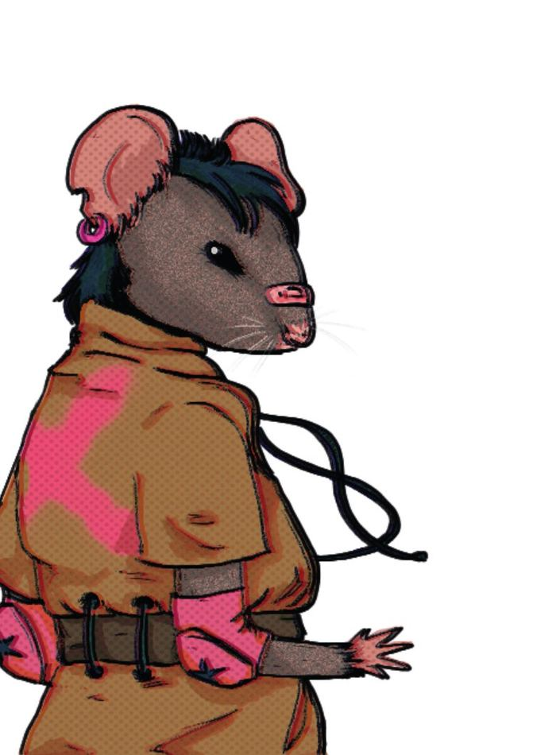
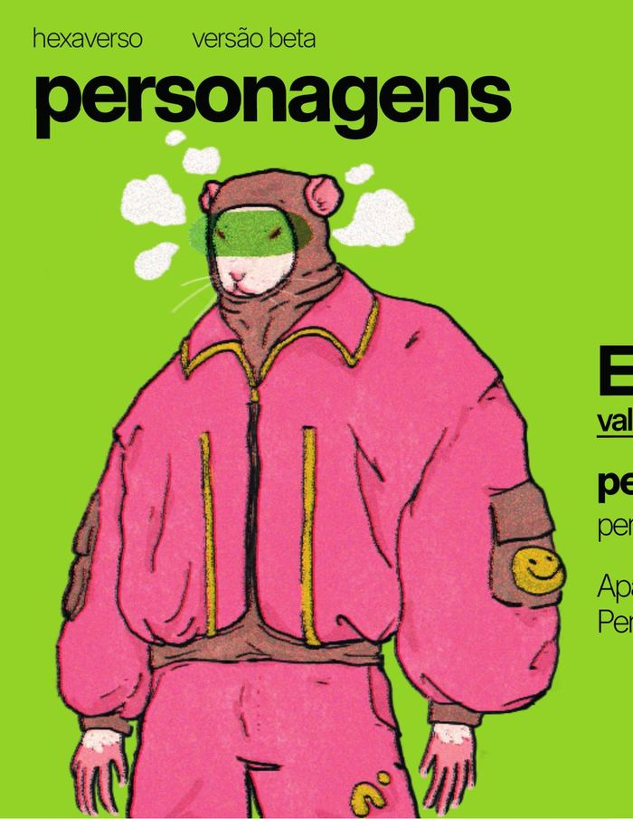
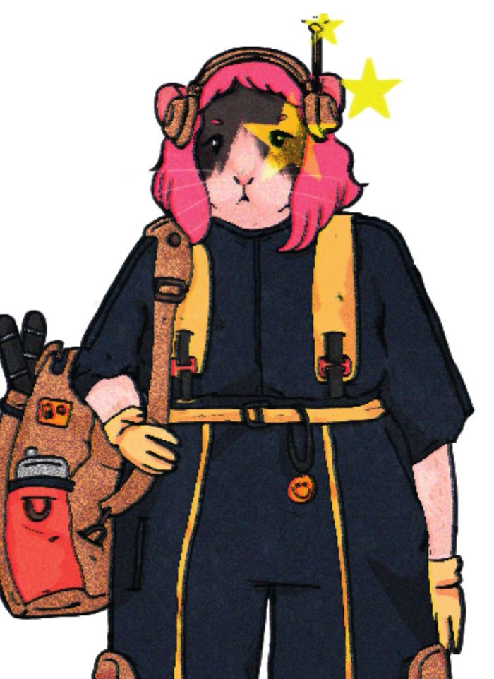
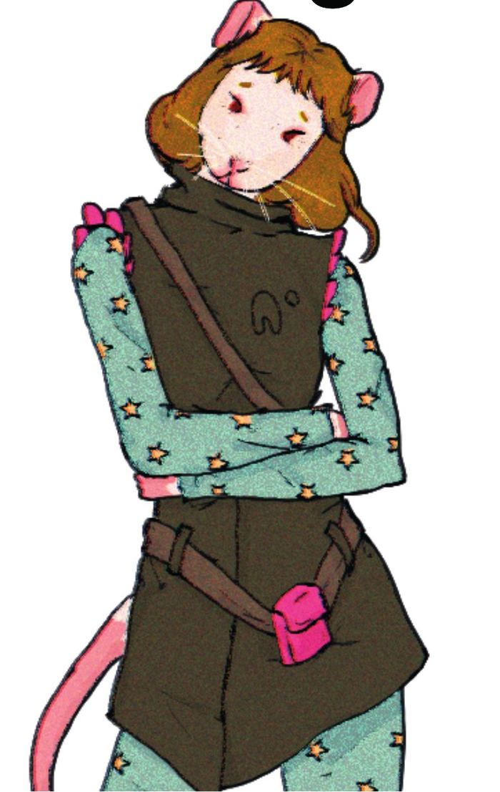
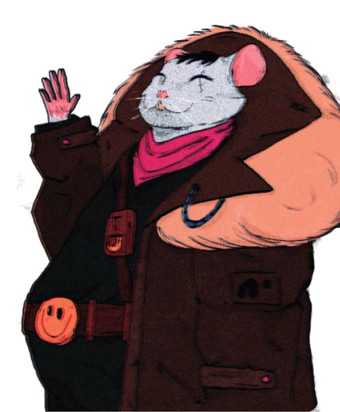
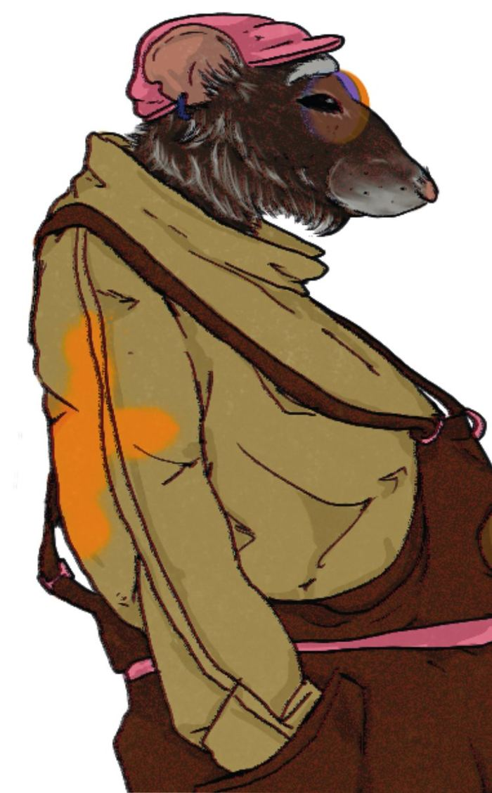
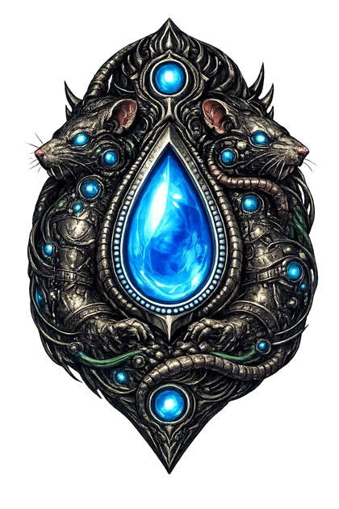
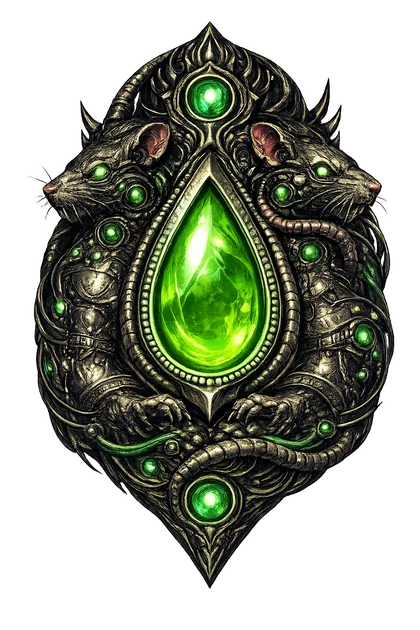
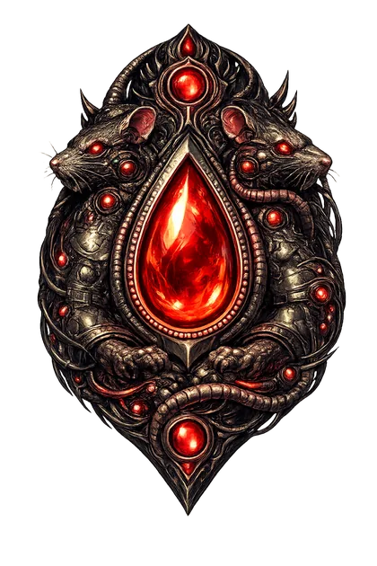
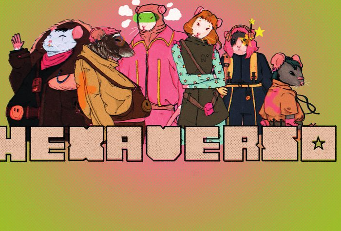

desfusão

Nixx
explorador · camundongo"pensamento não é fato."
Per3
Cor5
Cur5
quick play guide · pegue os dados e atravesse
Ratos de laboratório acordam em forma antropomorfizada numa metrópole chamada Cidade Cinza. Precisam sobreviver, se coordenar e — se der — encontrar o caminho de volta.
Concreto gasto, cabos pendurados, prédios que insistem em funcionar. Tecnologia velha, facções novas, vida apertada.
Um mestre conduz a ficção. Um mestre-auxiliar observa o grupo. Dividir essa carga muda tudo.
O dado resolve a ação. A coordenação do grupo é o que o jogo realmente observa.
O mundo responde ao que vocês fazem. Proteger, omitir, escalar, reparar — cada padrão muda o clima da campanha.
Isto não é figura de linguagem. Ao jogar Hexaverso, jogadores e mestres aprendem, de verdade, dois conceitos centrais da Psicologia comportamental moderna: o Hexaflex — que explica o comportamento individual — e a metacontingência — que explica o comportamento da sociedade. Duas lentes complementares, valiosas para observar, analisar e navegar o mundo: o seu, o dos outros, o coletivo.
Hexaverso é um artefato construído na interface entre ciências comportamentais e game design. Cada cadeira da mesa vem com uma aprendizagem específica — que atravessa com você pra fora da ficção.
Os seis processos da flexibilidade psicológica — aceitação, desfusão, presença, eu-como-contexto, valores, ação comprometida. O mestre principal desenha cenas que convocam esses processos e observa quais personagens os encarnam.
Como o comportamento do grupo — não do indivíduo — produz efeitos que o mundo seleciona. Registra CCEs, identifica o culturante predominante, atualiza o Índice de Integridade. Aprende a ler cultura em ato.
Os mesmos dois conceitos — mas aprendidos de dentro. Cada jogador encarna um vértice do Hexaflex e experimenta o que ele faz numa cena real; em conjunto, vivem a metacontingência acontecendo (suas escolhas coordenadas mudam o mundo). Saem da mesa com novas lentes para ler: si mesmos, os outros, a escola, a rua, o coletivo.
Quando algo é incerto, arriscado e pode mudar a cena, a mestra pede um teste. Três atributos: Percepção, Coragem, Curiosidade. Cada um vai de 1 a 6.
Um único dado de seis faces. Sem tabelas, sem planilhas. Compare com o valor atual do atributo.
A mestra descreve o que acontece. Falha não é travar a história — é empurrá-la pro lado mais interessante. O grupo segue. O mundo reage.
Seis fichas, seis ratos de linhagens diferentes. Escolha um. Nenhum resolve tudo sozinho — o grupo se completa quando se recombina.

"pensamento não é fato."

"foco no que realmente importa."

"primeira a agir. última a recuar."

"quando tudo parecer incontrolável..."

"o agora é tudo que me pertence."

"você é maior que o momento."
arraste ou use as setas
uma metrópole cansada que continua funcionando por pura insistência.
Ratos antropomorfizados vivem em torres, becos, subsolos e áreas que o centro prefere não olhar. Há facções armadas, oficinas de improviso, uma milícia que chama coerção de ordem, contrabandistas que conhecem rotas que não estão em mapa nenhum.
Dois mundos entraram em instabilidade. Se nada for feito em aproximadamente dez meses, podem colapsar juntos. O relógio está sempre correndo em segundo plano.

Mascote tecnológico, banco de dados parcialmente corrompido. Sabe muito, entende menos. "Chance de sucesso moderada. Chance de constrangimento: excelente."
Diferente de outros RPGs, Hexaverso funciona com duas pessoas mestrando. Uma conduz a ficção. A outra observa o grupo em ação.
era pra ser um dia normal — e era.
Num laboratório de pós-graduação em Análise do Comportamento, uma universidade pública qualquer, estagiários executavam a rotina de sempre com os ratos do biotério. Manejo técnico, higiene, registros, pesagem. A manhã seguia em horário. Nada no ar sugeria que algo estava errado — e é assim que essas coisas costumam acontecer.
No prédio ao lado, o laboratório de física rodava um experimento de alta energia cujos detalhes nunca foram totalmente esclarecidos em relatório oficial. Às 10h47, uma descarga atravessou uma parede que deveria bloqueá-la. A luz do biotério hesitou. A água dos bebedouros vibrou. Uma rachadura luminosa abriu-se no ar — uma fenda dimensional que, pelo tempo que ficou aberta, foi o suficiente.
Os ratos mais próximos da fenda foram puxados para o outro lado. Grades, serragem, bebedouros e tudo que era familiar desapareceu num piscar. Quando a luz voltou, no lugar dos ratos havia apenas as gaiolas vazias — e um cheiro estranho no ar, como ozônio misturado a algo mais difícil de descrever.
Do outro lado, em uma dimensão que ninguém ainda havia mapeado, os mesmos ratos acordaram. Maiores. Mais eretos. Falando. Numa cidade cansada chamada Cidade Cinza.
assim nasceu o hexaverso.
No nosso lado, o departamento fechou o setor por três dias, classificou o episódio como "falha de equipamento" e arquivou a ocorrência. Quase ninguém viu o que aconteceu. Quase.
TESTEMUNHA ÚNICA → Um dos estagiários de plantão viu a fenda se abrir. Viu os ratos sumirem. Viu a luz errada. Tentou contar — mas ninguém acreditou. O departamento o mandou descansar. Ele continuou voltando.
Você lembra de um rato chamado Estagiário na Sessão 0? Ele ainda está lá. Ainda anotando. (Spoilers! El@ é @ mestre-auxiliar!)
"ninguém acredita em mim. mas eu vi."
No dia do acidente, havia um estagiário no laboratório. Humano. Recém-formado. O único que testemunhou a ruptura — e o único que não foi puxado com os ratos para o outro lado. Ele voltou ao prédio da universidade no dia seguinte e descobriu o que restava: um computador antigo, na biblioteca, ligado por engano em um circuito que ninguém quis desligar.
Por algum motivo, aquela tela mostra o Hexaverso. Em tempo real. Com atraso. Com interferência. Mas mostra.
Ele tentou contar. Conversou com o orientador, conversou com dois colegas, escreveu um e-mail para o departamento de física. Ninguém acreditou. Mandaram ele descansar. Então ele parou de contar — e começou a anotar. Registros precisos, comportamentais, metódicos. Como faria um estagiário bem treinado num laboratório de ciência do comportamento.
na mesa: o mestre-auxiliar é o Estagiário. A ficha que ele preenche é o relatório que ele está escrevendo do outro lado. O computador da biblioteca é a própria mesa de jogo.
O mundo tem três estados. O mestre-auxiliar acompanha. O grupo sente na pele.

Mundo cooperativo, esperançoso, aberto. Grupo funcionando como unidade.

Funcional com rachaduras. Desconfiança, custo crescente, mas ainda segurando.

Ambiente hostil, punitivo, fragmentado. O mundo parou de ajudar.
Uma cena real, com dois personagens e uma escolha difícil. É assim que funciona na mesa.
 O beco atrás do Mercado Velho tem cheiro de óleo e chuva antiga. Três ratos da milícia de Unhudo cercaram Flik para humilhá-lo diante da plateia que começava a se formar no topo da rampa — uma cena clara de bullying se montando. Um deles segura um cano. Ninguém indo embora, ninguém intervindo.
O beco atrás do Mercado Velho tem cheiro de óleo e chuva antiga. Três ratos da milícia de Unhudo cercaram Flik para humilhá-lo diante da plateia que começava a se formar no topo da rampa — uma cena clara de bullying se montando. Um deles segura um cano. Ninguém indo embora, ninguém intervindo.
Micca e Poppy chegam pela outra ponta. Têm segundos antes que alguém aperte o gatilho do que vai acontecer.
Micca "Vou me interpor. Quero chegar antes do cano descer. Não quero atacar — só ficar entre eles e o Flik."
Micca atravessa o beco num pulo, cruza os braços, planta os pés. O cano para a um palmo do rosto dela. O silêncio fica grosso.
Poppy "Fico ao lado dela. Falo alto, pra plateia ouvir: 'não vale a pena, já tem gente que viu. vão embora enquanto dá.'"
A plateia escuta. Dois deles viram o rosto e começam a descer a rampa. Mas um dos milicianos reconhece Poppy — e agora sabe onde ela mora.
Os três recuam. Flik exala o ar que tinha segurado. "Vocês não me conhecem. Por que fizeram isso?" O cheiro de óleo ainda está ali, mas o beco virou outro lugar.
Na outra ponta da mesa, a mestra-auxiliar termina de anotar. Ninguém vê o que ela escreveu.
Nas sessões seguintes, vendedores do Mercado Velho cumprimentam o grupo de longe. Flik aparece nos lugares mais improváveis, sempre com uma informação útil. A milícia recua de um certo quarteirão — por enquanto.
Isso é uma metacontingência em operação: o grupo coordenou uma resposta protetiva, o mundo selecionou esse padrão de coordenação, a campanha inteira muda por causa disso.
O que aconteceu na mesa não fica na mesa. Entre as sessões, o jogo continua — em cadernos, leituras e pequenas missões que atravessam com você pra fora da ficção.
Ao final de cada capítulo (e em pontos marcados da campanha), o mestre-auxiliar conduz um momento de follow-up: uma discussão curta, gamificada, com roteiro aberto. Não é avaliação. É um espaço estruturado para generalizar aprendizagens — pegar o que aconteceu com os personagens e pensar como isso se parece (ou não) com o que acontece na vida real do jogador.
Cada jogador recebe seu próprio Companion Log — um caderno físico. Nele, registra pensamentos, reações, dúvidas e pequenas reflexões que surgem durante e entre as sessões. É onde a aprendizagem sai da ficção e começa a aparecer com nome próprio. Não precisa ser bonito. Não precisa ser longo. Precisa ser seu.
Cada jogador recebe um pacote de quests personalizadas conforme o eixo do Hexaflex que seu personagem representa. Quem joga Nixx (desfusão) recebe missões diferentes de quem joga Elan (valores) ou Bree (momento presente).
Cada tarefa concluída desbloqueia um achievement. Não é só um selinho: cada achievement gera bônus in-game — boosts temporários em stats, itens secretos, pistas de NPCs, acesso a cenas ocultas. Quanto mais quests realizadas, mais vantagens na mesa. Aprender rende.
Hexaverso foi construído por cientistas interessados em game design. E cientistas querem uma coisa: dados. Não só os rolados na mesa — queremos os seus dados comportamentais, suas experiências reais de jogo, o que aconteceu com você e com o seu grupo.
Jogou Hexaverso? Conta pra gente. Usou as fichas de registro padronizadas? Melhor ainda. Observou mudanças no grupo ao longo das sessões? Aprendizagens que apareceram fora da mesa? Isso é ouro pra pesquisa — e ajuda a melhorar o jogo para quem vier depois.
◆ CRIACOM · UEL-CNPq
Centro de Referência de Inovação em Análise do Comportamento
Adoraríamos receber seu feedback. Cada dado que chega nos ajuda a entender o que o jogo realmente faz — e a desenhar as próximas versões com mais precisão. Obrigado por jogar. Obrigado por contar.

Este é um quick-play. O jogo completo tem campanha de 11 sessões, fichas estruturadas, follow-ups e toda a arquitetura de dupla de mestres.
consulte o manual completo →★ desenvolvido na uel · cnpq · cc by 4.0 ★